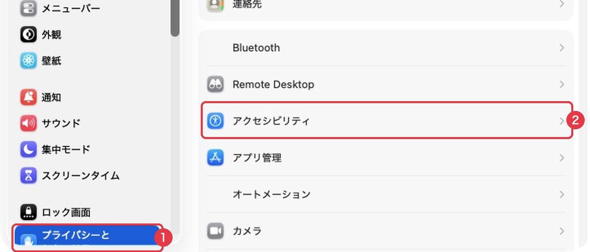
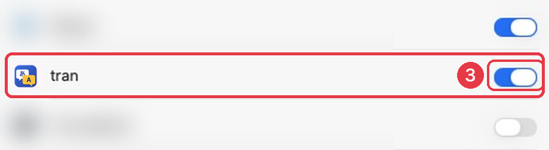
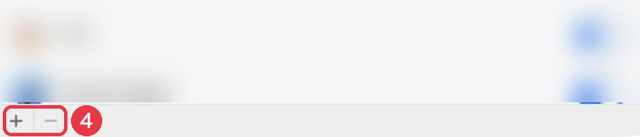

tran マニュアル
このマニュアルは tran のベータ版（0.1 系）について書いています。画面やキー操作は、版によって変わる場合があります。
1. tran とは
tran は、日本語を話す人が英語で仕事をするときに使う、常駐型の翻訳ツールです。次の2つを、ブラウザやチャットのアプリを開かずに行うためのものです。
- 自分では英語にしにくい内容を、意図と強さが正しく伝わる英文にする。
- 相手が曖昧に書いた英文を、前後のやりとりを踏まえて日本語で理解し、返信を考える。
翻訳には、利用者が契約した LLM（大規模言語モデル）の API を使います。
2. インストールと更新
macOS（Homebrew）
ターミナルで、次の2つを順に実行します。
brew tap oxgenet/tran https://github.com/oxgenet/tran-pub
brew install --cask oxgenet/tran/tranHomebrew が「tap が信頼されていない」と表示した場合は、次を実行してから、インストールのコマンドをもう一度実行します。
brew trust --tap oxgenet/tran新しい版に更新するときは、次を実行します。
brew upgrade --cask tran「the latest version is already installed」と表示された場合は、すでに最新の版が入っています。
Windows（Scoop）
scoop install https://github.com/oxgenet/tran-pub/releases/latest/download/tran.json直接ダウンロード
リリースの一覧から、macOS は .dmg、Windows は -setup.exe のファイルをダウンロードします。macOS 版は Apple の公証を受けているので、ダウンロードしたものをそのまま開けます。
3. API キーの設定
tran は、翻訳のたびに LLM の API を呼び出します。API を呼び出すには、利用者自身の API キーが必要です。キーを登録するまで、tran は翻訳できません。
3.1 プロバイダーを選ぶ
| プロバイダー | 申し込む場所 | 支払い方 | 設定画面のモデル名 |
|---|---|---|---|
| Anthropic（Claude） | platform.claude.com | 前払いのクレジットから、使った量だけ引かれる | 空欄でよい（既定のモデルを使う） |
| OpenAI | platform.openai.com | 前払いのクレジットから、使った量だけ引かれる | 使うモデルの名前を入力する（OpenAI のドキュメントに載っている名前） |
| DeepSeek | platform.deepseek.com | 前払いの残高から、使った量だけ引かれる | 空欄でよい |
| その他（OpenAI 互換） | 手元で動かすモデルなど | — | モデル名と接続先の URL を入力する |
翻訳1回あたりの費用は小さく、数ドルの前払いで長く使えます。どのプロバイダーに何が送られるかは、データの扱いを読んでから選んでください。
3.2 API キーを作る（各社のサイト）
- 上の表の「申し込む場所」のサイトを開き、アカウントを作ってサインインします。
- 支払いの画面（Billing など）で、クレジットを購入するか、残高を入金します。残高がないと、キーを作っても翻訳は失敗します。
- 「API Keys」の画面で、新しいキーを作ります。名前は「tran」など、分かるものにします。
- 作ったキーが表示されたら、すぐにコピーします。キーは作った直後の一度しか表示されません。閉じてしまった場合は、新しいキーを作り直します。
各社のサイトの画面の名前は、予告なく変わることがあります。見当たらない場合は、各社のヘルプで「API key」を検索してください。
3.3 tran に登録する
- tran のウィンドウを開き、⌘,（Windows は Ctrl,）を押します。設定画面が開きます。初めて起動したときは「tran へようこそ」の画面が出るので、「設定を開く」を押します。
- 「プロバイダー」で、キーを作った会社を選びます。
- OpenAI の場合は、「モデル」に使うモデルの名前を入力します。他のプロバイダーは空欄のままで構いません。
- 「API キー」の欄に、コピーしたキーを貼り付けます。
- 「保存」を押します。
- 入力パネルに「こんにちは」と書いて ⌘Enter を押し、英訳が出れば設定は完了です。
登録したキーは、その PC の資格情報の保管庫（macOS はキーチェーン、Windows は資格情報マネージャー）に保存されます。設定ファイルには書かれません。
4. 基本の使い方
- OptionShiftT（Windows は AltShiftT）を押すと、どのアプリを使っているときでも tran のウィンドウが開きます。もう一度押すと隠れます。
- 入力パネル（中央の左）に、訳したい文章を書くか貼り付けます。日本語なら英語に、英語なら日本語に訳されます。
- ⌘Enter を押すと翻訳が始まります。Enter だけでは翻訳されず、改行になります。日本語を変換中の Enter で翻訳が始まることはありません。
- 結果パネル（中央の右）に訳文が出ます。日本語から英語のときは「この英文の伝わり方」と別案、英語から日本語のときは「要点」「曖昧な箇所」「返信案」も出ます。
- ⌘ShiftC を押すと、訳文をコピーして tran を隠します。元のアプリで ⌘V で貼り付けます。
ウィンドウの閉じるボタンを押しても、tran は終了しません。メニューバー（Windows はタスクトレイ）の tran のアイコンから「終了」を選ぶと終了します。
5. キー操作の一覧
Windows では、⌘ を Ctrl、Option を Alt に読み替えてください。
| キー | 動作 |
|---|---|
| OptionShiftT | tran のウィンドウを表示する／隠す（どのアプリからでも） |
| OptionShiftR | 手前の Slack のやりとりを取り込んで開く（macOS のみ） |
| ⌘Enter | 翻訳する |
| Esc | 翻訳の途中なら止める。そうでなければ tran を隠す |
| ⌘ShiftC | 訳文をコピーして tran を隠す |
| Tab / ShiftTab | 次のパネル／前のパネルへ移る |
| ⌘R | 返信を書く。押すたびに返信案を切り替える |
| ⌘ShiftR | 文脈トレイを空にし、返信先を外す |
| ⌘ShiftV | クリップボードの文章を文脈トレイに足す |
| OptionShiftA | 選択した文章を文脈トレイに足す（どのアプリからでも。macOS のみ） |
| I Space E D Delete | 文脈トレイのカードを強調／外す・戻す／編集／ダイエット／取り除く |
| CtrlTab / CtrlShiftTab | 履歴を1件新しい方／古い方へ |
| ⌘1〜9 | n 番目のサブコンテキストを選ぶ |
| ⌘0 | 文脈の選択を外す |
| ⌘K | 文脈を検索する |
| ⌘F | 履歴を検索する |
| ⌘ShiftE / ⌘ShiftH | 文脈パネル／履歴パネルを表示する・隠す |
| ⌘, | 設定を開く |
| ↑ ↓ Enter | 履歴・文脈・確認項目の一覧の中で移動する／選ぶ |
| 1〜9 | 確認項目の一覧で、選択肢を選ぶ |
| ⌘Z / ⌘ShiftZ | 確認項目の選び直しを元に戻す／やり直す |
6. Slack と一緒に使う（macOS）
Slack のデスクトップ版から、発言を前後のやりとりと一緒に tran に渡せます。前後のやりとりを読み取るには、アクセシビリティの許可が必要です。
6.1 右クリックで渡す
- Slack で、訳したい発言の文章をドラッグして選択します。
- 選択した文章の上で右クリックします。
- メニューの一番下の「サービス」にマウスを合わせます。
- 右に開いた一覧から「tran に渡す」を選びます。
tran のウィンドウが開き、選択した文章が入力パネルに入って、翻訳が始まります。入力パネルの上部には、「Slack / ワークスペース名 / チャンネル名」と、それより前の発言が表示されます。
6.2 ホットキーで渡す
Slack を手前にして OptionShiftR を押すと、画面に表示されている最後の発言が入力パネルに入り、それより前の発言と一緒に翻訳されます。
6.3 読み取れる範囲
- tran が読み取るのは、Slack のウィンドウに表示されている発言だけです。古い発言を含めたいときは、Slack をスクロールして表示させてから渡します。
- ボット（アプリ）の発言は、発言者と時刻が正しく取れない場合があります。
- Slack の画面の作りが変わると、読み取りに失敗する場合があります。その場合も、右クリックで渡した文章だけは翻訳されます。
7. アクセシビリティの許可（macOS）
Slack に表示されているやりとりを tran が読み取るには、macOS の「アクセシビリティ」の許可が必要です。許可がなくても、右クリックで渡した文章の翻訳はできます。
許可がないまま読み取ろうとすると、tran がこの手順の案内を表示します。案内の「システム設定を開く」を押すと、手順3の画面が直接開きます。案内は、tran のメニューの「ヘルプ」→「アクセシビリティの許可の案内」からも開けます。
7.1 許可を出す手順
- 画面左上のアップルメニューから「システム設定」を開きます。
- 左の一覧で「プライバシーとセキュリティ」をクリックします。
- 右側で「アクセシビリティ」をクリックします。アプリの一覧が、アルファベット順に表示されます。

- 一覧に「tran」があるかを探します。
- tran がある場合：tran の右のスイッチをクリックして、オン（スイッチが右に寄り、青くなった状態）にします。灰色で左に寄っているのがオフです。

- tran がない場合：一覧の左下にある「＋」（図の④）を押します。

ファイルを選ぶ画面が開いたら、左側の「アプリケーション」をクリックし、右側の「tran」を選んで「開く」を押します。一覧に tran が追加され、スイッチがオンになります。 - Mac のパスワードか Touch ID を求められたら、入力します。
7.2 許可したのに読み取れない場合
一覧の tran のスイッチがオンなのに、tran が「アクセシビリティで tran を許可してください」と表示する場合は、古い許可が残っています。次の手順で入れ直します。
- 一覧で「tran」の文字を1回クリックして選びます（スイッチはクリックしません）。
- 一覧の左下の「−」を押します。一覧から tran が消えます。
- 7.1 の手順6のとおり、「＋」で tran を追加し直します。
8. 返信を書く
- 相手の英文を tran で訳すと、返事が必要な発言の場合は、結果パネルの最後に「返信案」が2〜3件出ます。返信案は、方向（承諾する、確認する、保留するなど）が互いに違います。
- ⌘R を押すと、相手の発言が入力パネルの上部に「返信先」として残り、返信案の1件目が入力パネルに入ります。
- もう一度 ⌘R を押すと次の返信案に、最後は空に切り替わります。
- 返信案を書き換えます。〔日付〕のような印は、tran が知らない事実なので、自分で書き入れます。
- ⌘Enter を押すと、返信先とそれまでのやりとりを踏まえた英文になります。
- ⌘ShiftC でコピーし、Slack の返信欄に貼り付けます。
返信を書き終えたら、⌘ShiftR で返信先とやりとりを外します。
8A. 文脈トレイ
文脈トレイは、翻訳のたびに LLM に渡す材料（相手の発言、メモ、仕様書の抜粋など）を、1件ずつカードで並べる場所です。入力パネルの上部に表示されます。材料を集めてから翻訳すると、材料を踏まえた訳文と返信になります。
材料を入れる
| 入れ方 | 操作 |
|---|---|
| ドラッグ＆ドロップ | 他のアプリで選択した文章や、テキストのファイル（.txt・.md・.eml など）を、tran のウィンドウへドラッグします。入力パネルの上半分「文脈に追加」に落とすとトレイに入り、下半分「訳す文章として入れる」に落とすと入力に入ります。 |
| 右クリック（macOS） | 他のアプリで文章を選択して右クリック →「サービス」→「tran の文脈に追加」。tran のウィンドウは前に出ず、元のアプリで作業を続けられます。 |
| ホットキー（macOS） | 文章を選択して OptionShiftA。右クリックと同じく、元のアプリのまま足せます。 |
| ブラウザ | Web ページで選択して右クリック →「tran の文脈に追加」（ブラウザ拡張機能が必要）。 |
| 貼り付け | tran の中で ⌘ShiftV、またはトレイの「貼り付け」。クリップボードの文章が入ります。 |
| Slack から渡す | 「tran に渡す」で Slack の発言を渡すと、前のやりとりが自動でトレイに入ります。 |
トレイに材料が入っていると、メニューバー（Windows はタスクトレイ）の tran のアイコンの横に件数が出ます。tran を前に出さずに足したときも、入ったことが分かります。
材料を整える
カードの右上のボタンか、トレイを選んだ状態のキーで操作します（Tab でトレイに移り、↑↓ でカードを選びます）。
| ボタン | キー | 動作 |
|---|---|---|
| ★ | I | 強調する。LLM に「重要」と伝え、他の材料と食い違うときに優先させます。 |
| 外す／戻す | Space | 消さずに、今回だけ LLM に渡さないようにします。外した材料は薄く表示されます。 |
| 編集 | E | 文章を書き換える・一部を消す。全文もここで見られます。 |
| ダイエット | D | LLM に要約させて短くします。事実・決まったこと・質問・数字・名前は残し、あいさつや繰り返しは落とします。 |
| 元に戻す | — | 書き換えとダイエットの前の文章に戻します。 |
| × | Delete | トレイから取り除きます。⌘Z で元に戻せます。 |
- 全体をダイエット：有効な材料をまとめて1件に要約します。元の材料は消さずに外すので、要約を消して元の材料を戻すこともできます。
- 量の目盛り：トレイの上部に、渡す材料の文字数と目盛りが出ます。目盛りが黄色や赤になったら、ダイエットか、要らない材料を外すことを勧めます。材料が長いほど、翻訳が遅くなり、費用も増えます。
- 文脈に保存：有効な材料を、選択中のサブコンテキストの説明に足します。毎回使う背景を、次から自動で渡せるようになります。サブコンテキストを選んでいないときは、新しいサブコンテキストの登録画面が開きます。
- 空にする（⌘ShiftR）：材料と返信先をすべて外します。
トレイの中身は、翻訳と一緒に履歴に保存されます。履歴から開き直すと、そのときのトレイも戻ります。
8B. ブラウザ拡張機能（Chrome・Edge）
Web ページで選択した文章を、tran に渡せるようにする拡張機能です。Slack の Web 版では、選択した発言の前のやりとりも一緒に渡します。
入れ方
- リリースの一覧から
tran-browser-extension-（版）.zipをダウンロードし、ダブルクリックして展開します。展開したフォルダは、消さない場所（書類フォルダなど）に置いてください。拡張機能は、このフォルダから読み込まれます。 - Chrome のアドレス欄に
chrome://extensionsと入力して開きます（Edge はedge://extensions）。 - 右上の「デベロッパーモード」をオンにします。
- 左上の「パッケージ化されていない拡張機能を読み込む」を押し、手順1で展開したフォルダを選びます。
- ツールバーのパズルの形のアイコンを押し、「tran」の横のピンを押すと、ツールバーに tran のアイコンが出ます。
tran と接続する
- tran の設定（⌘,）で「他のアプリからの利用を許可する」をオンにして、保存します。
- ツールバーの tran のアイコンを押し、「tran と接続する」を押します。
- tran のウィンドウに「ブラウザ拡張機能の接続」が出るので、「許可する」を押します。拡張機能の画面に「tran と接続しています」と出れば完了です。
使い方
- Web ページで文章を選択して右クリック →「tran に渡す」：tran のウィンドウで翻訳が始まります。
- 右クリック →「tran の文脈に追加」：tran の文脈トレイに足すだけで、tran は前に出ません。
- キーでも使えます。「tran に渡す」は OptionShiftY（Windows は AltShiftY）。キーは
chrome://extensions/shortcutsで変えられます。
9. 確認項目
入力に曖昧なところ（省略された主語、誤字の疑い、期限の表現など）があると、翻訳のあとに画面下の「確認項目」に質問が出ます。翻訳は、tran が選んだ解釈で先に表示されます。
- Tab で確認項目のパネルに移ります。
- ↑↓ で質問を選び、1〜9 で選択肢を選びます。マウスでクリックしても選べます。
- 選び直すと、その答えで自動的に翻訳し直します。⌘Z で元に戻せます。
10. 文脈
文脈は、「誰と、何の話をしているか」を tran に伝えるための登録です。登録した説明は、翻訳のたびに LLM に渡され、用語や語調の選び方に使われます。
- コンテキスト：取引先やプロジェクトの単位。Slack ではワークスペースにあたります。
- サブコンテキスト：その中の相手・話題・チャンネル。Slack ではチャンネルにあたります。
- 左の文脈パネルの「＋ コンテキストを追加」を押し、名前と説明（相手との関係、用語と訳語、望ましい語調など）を書いて保存します。
- コンテキストの名前を右クリックし、「サブコンテキストを追加」で同じように登録します。
- 使うときは、文脈パネルの項目をクリックするか、⌘1〜9 で選びます。
コンテキストの名前を Slack のワークスペース名、サブコンテキストの名前をチャンネル名と同じにしておくと、Slack から渡したときに自動で選ばれます。
11. 履歴
- 翻訳が最後まで終わると、自動で右の履歴パネルに保存されます。途中で止めた翻訳は保存されません。
- CtrlTab / CtrlShiftTab で前後の履歴を表示し、⌘F で検索できます。
- 入力中の文章に似た過去の翻訳は、履歴パネルの上部に「入力に近い履歴」として表示されます。
- 履歴の項目を右クリックすると、入力に戻して編集、結果のコピー、削除ができます。
12. 他のアプリから使う
- 右クリックのメニュー：Slack 以外のアプリでも、文章を選択して右クリック →「サービス」→「tran に渡す」で、選択した文章を tran に渡せます（macOS）。
- ローカル API と tran コマンド：設定画面で「他のアプリからの利用を許可する」を有効にすると、この PC の中のプログラムから tran に翻訳を頼めます。既定では無効です。
13. Windows で使う場合
- 翻訳、確認項目、文脈、履歴、設定は、macOS と同じように使えます。キーの ⌘ は Ctrl、Option は Alt に読み替えます。
- Slack のデスクトップ版からの読み取り（6 章）は、Windows でも使えます。Windows ではアクセシビリティの許可は要りません。
- Windows の Slack には、右クリックの「tran に渡す」がありません。代わりに、Slack で文章を選択してから、次のキーを押します。
- AltShiftR：選択した発言と、その前のやりとりを tran に渡して翻訳します（右クリックの「tran に渡す」と同じ動作）。
- AltShiftA：選択した文章を、文脈トレイに足します（右クリックの「tran の文脈に追加」と同じ動作）。
- Slack の Web 版は、ブラウザ拡張機能（8B 章）の右クリックで使えます。
14. 困ったとき
| 症状 | 確かめること |
|---|---|
| 「API キーが見つかりません」と出る | 3 章の手順で、設定画面にキーを登録してください。 |
| 「API キーが受け付けられませんでした（HTTP 401）」と出る | キーの貼り付けの誤り、またはキーの削除が考えられます。各社のサイトで新しいキーを作り、登録し直してください。 |
| 「利用の上限に達しました（HTTP 429）」と出る | 残高の不足か、短時間に使いすぎたことが原因です。各社のサイトで残高を確かめ、少し待ってからやり直してください。 |
| 右クリックの「サービス」に「tran に渡す」がない | tran を一度起動してから、もう一度右クリックしてください。それでもない場合は、システム設定の「キーボード」→「キーボードショートカット」→「サービス」→「テキスト」で「tran に渡す」にチェックを入れてください。 |
| Slack のやりとりが取り込まれない | 7 章の許可を確かめてください。許可がある場合は、Slack のウィンドウにやりとりが表示されているかを確かめてください。 |
| ホットキーが効かない | 他のアプリが同じキーを使っている可能性があります。そのアプリのキーの設定を変えてください。 |
読み取りに失敗した理由は、次のファイルに記録されます。問い合わせのときに添えてください。
- macOS
~/Library/Application Support/net.oxgenet.tran/tran.log - Windows
%APPDATA%\net.oxgenet.tran\tran.log
15. データの扱い
- 翻訳する文章、取り込んだ Slack のやりとり、登録した文脈の説明は、翻訳のたびに、設定で選んだ LLM のプロバイダーに送られます。それ以外の宛先には送られません。
- プロバイダーごとに、送った内容の扱いが違います。たとえば DeepSeek では、送った内容は中国のサーバーで処理されます。取引先とのやりとりを扱う場合は、各社の利用規約と、勤め先の取り決めを確かめてからプロバイダーを選んでください。
- tran は、送った内容をサービスの改善に使う無料枠（Google の Gemini の無料枠など）を案内していません。
- 履歴・文脈・設定は、その PC の中だけに保存されます。API キーは、その PC の資格情報の保管庫に保存されます。